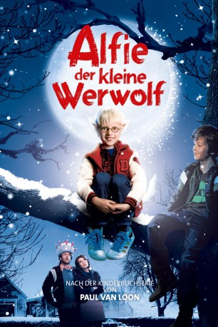

#10666 Alfie, der kleine Werwolf
 
 IMDB-Wertung: 6.3 / 10
IMDB-Wertung: 6.3 / 10  Metascore: 0
Metascore: 0 
Alfie ist ein ängstlicher Junge mit hellblonden Haaren, runder Brille und einer geheimnisvollen Herkunft. Morgen wird er sieben Jahre alt. Und seine Adoptiveltern und der Stiefbruder Timmie stecken mitten in den Geburtstagsvorbereitungen, als etwas Ungewöhnliches passiert: Punkt Mitternacht wacht Alfie auf und bemerkt, wie er sich plötzlich verändert. Beim Blick in den Spiegel stellt er mit Erschrecken fest, dass seinen Körper nun spitze Ohren und ein weiches Fell zieren und er sich tatsächlich in einen kleinen Werwolf verwandelt hat. Zum Glück ist der Spuk am Morgen wieder vorbei. Doch der nächste Vollmond lässt nicht lange auf sich warten und seine Adoptiveltern dürfen schließlich nichts davon mitbekommen. Nur sein Bruder Timmie weiß Bescheid. Beide Jungs versuchen nun eifrig das Geheimnis zu bewahren ...
Jahr: 2011
Dauer: 87 Minuten
FSK: 0
Land: Niederlande Studio: Barnsteiner-FilmTonspuren:
Untertitel:
Auflösung: 720p (1280x536) Größe: 2058 MB
Genre: Drama, Fantasy, Familie
Regisseur: Joram Lürsen
Drehbuch: Tamara Bos, Paul van Loon
Soundtrack:
Darsteller:
- Kim van Kooten als Moeder Vriends
- Sieger Sloot als Meneer van Dale
- Dewi Reijs als moeder Noura
 Tygo Gernandt als Dierengeluiden Dolfje
Tygo Gernandt als Dierengeluiden Dolfje- Ole Kroes als Dolfje
- Maas Bronkhuyzen als Timmie Vriends
- Remko Vrijdag als Vader Vriends
- Joop Keesmaat als Opa Weerwolf
- Trudy Labij als Mevrouw Krijtjes
- Nick Geest als Nico Pochmans
- Barbara Pouwels als Moeder Pochmans
- Pim Muda als Meester Frans
- Lupa Ranti als Noura
- Bianca Krijgsman als Juf Jannie
- Kees Hulst als Hoofdmeester Rutjes
- Ottolien Boeschoten als Tante Wies
- Niek van der Horst als Monteur
- Luc Theeboom als Collega Ozdm
- René van 't Hof als Blinde man
- Elske Falkena als Mevrouw in rode jas
- Java Siegertsz als Vertelster
- Fons Merkies als Vader in publiek
- Tamara Bos als Moeder in publiek
- Sofie Ott De Vries als Karin
- Zinedin el Bouzghibati als Achmed
- Max Cligge als vriendje Timmie
- Pol Coronel als Maarten
- Twan van Tunen als Theo
Datei: X:\Kinder Filme (A-F)\Alfie, der kleine Werwolf (2011, FSK0, 1280x536).mkv seit 16.02.2019
Festplatte: Kinder-Filme+Trick
 Es gibt insgesamt 68 Filme in der Gruppe 'Kinder Filme (A-F)'
Es gibt insgesamt 68 Filme in der Gruppe 'Kinder Filme (A-F)'